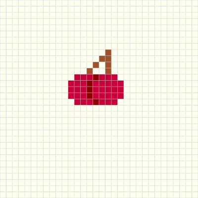

Thomas A. Edison High School
Wed Design
Grade 10
lab 6 Favicon, banner and branding
10/14/21
John Okoroh


What is favicon used for? A favicon is a graphic image (icon) associated with a particular Web page and/or Web site. Many recent user agents (such as graphical browsers and newsreaders) display them as a visual reminder of the Web site identity in the address bar or in tabs
step 1: Create Your Image. You can design a favicon image using an editor like Fireworks, Photoshop, Corel Paint, or a free, open-source alternative like GIMP Step 2: Convert the Image Step 3: Upload the Image to Your Website Step 4: Add Basic HTML Code
using the steps from before